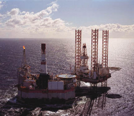

|
Center
for the Defense of Free Enterprise: Issues 
Associated Press
Alaskans know it: Oil and
Ecology DO Mix |
|
HOME ISSUES OPPOSITION PROJECTS DEFENDERS WISE USE BOOKSTORE ARCHIVE |
ANCHORAGE (AP) - Leigh Ann Bauer, who has lived in Alaska for 12
years, calls herself a "big-time animal lover." She also considers herself
"pretty pro-oil development."
To many people in Alaska, those two things are not mutually exclusive.
In fact, sometimes it seems as if people outside Alaska see a bigger conflict
between the environment and oil and gas drilling than those living here do - a
phenomenon made clear during the recent debates over exploiting new sources of
energy in Alaska as existing stores become tapped out.
Alaska's economy is heavily dependent on oil, while its vast wilderness is a
lure for outdoors enthusiasts.
As far as many people are concerned, those two interests exist in remarkable
harmony, with about 60 million hectares of national parks, refuges and forests
where development is either restricted or prohibited altogether.
Since 1986, the Alaska Oil and Gas Association, an industry group, has regularly
tracked public opinion on opening the Arctic National Wildlife Refuge to
exploration. Pollster Dave Dittman said 500 or more Alaskans are surveyed each
year.
Over the years, public support has hovered around 70 per cent, while the
opposition average is 23 per cent. Support dipped sharply only after the Exxon
Valdez oil spill of 1989. That year, 54 per cent supported development of the
refuge, while 40 per cent opposed it.
In a recent survey, 81 per cent said they believed oil and gas development has
been environmentally safe. Fifteen per cent disagreed.
"There may be a perceived paradox between development and the beautiful
wilderness, but it's largely held outside Alaska," Dittman said. "Most Alaskans
believe the oil industry and the environment have gotten along just fine."
Independent polls on the issue are hard to find. But one gauge of public opinion
might be found at the ballot box - Alaskans tend to elect pro-development
candidates, including Democrat Tony Knowles, Alaska's only two-term governor in
two decades. The former governor is running for the Senate and plans to push oil
and gas development.
"He has always said development and environmental stewardship go hand in hand.
Because we have the development, we can take the steps to protect the
environment," Knowles spokesman Bob King said. "I don't see a contradiction."
The history of Alaska since the arrival of the Europeans in the 18th century is
all about making money from natural resources. The Russians came for fur,
followed by people looking for gold, fish, timber, oil and gas.
"Most Alaskans are realistic about the fact that Alaska is a natural resource
state. That's what pays the bills," said Terrence Cole, a history professor at
the University of Alaska-Fairbanks. "If you take that away, I don't know what's
left. The whole idea of statehood was to develop the heck out of it."
Alaska's most recent big economic boom started in late 1960s and early '70s when
oil was discovered on the North Slope; the population more than doubled between
1963 and 1984.
"I'm a big-time animal lover and I love the wildlife up here. It's just awesome,
but there needs to be a balance," said Bauer, a criminal defence attorney in
Anchorage. "Responsible development is the key. I think the oil companies are
doing their job well."
Without oil, she said, the state would lose much of the revenue it needs to
maintain the benefits to which Alaskans have grown accustomed.
Because of its oil riches, Alaska abolished its state income tax in 1979, soon
after crude began flowing through the Alaska pipeline.
Also, practically every man, woman and child in the state gets a dividend check
from the state's oil-royalty fund every year just for living here. This year's
cheque was for $1,107.56 US. The state distributed more than $663 million in all
to nearly 599,000 Alaskans.
As for the effects on wildlife, oil drilling at Prudhoe Bay has not hurt the
Central Arctic caribou herd, supporters point out. In fact, the herd has
increased almost six times in size - from 5,000 animals in 1974 to nearly 32,000
in the latest count by the Alaska Department of Fish and Game. Caribou are
commonly seen grazing near oil rigs and pipelines.
The sheer size of Alaska means that drilling on the Arctic Circle is not exactly
next door to the places most Alaskans live. For someone in Anchorage to get
upset about drilling in ANWR would be, geographically speaking, like someone in
Memphis worrying about the environment in Detroit, about 1,000 kilometres away.
Not everybody in Alaska feels that way.
Some environmentalists in Alaska, along with their Lower 48 counterparts, are
vocal in their opposition to development of the Arctic refuge and, more
recently, the National Petroleum Reserve-Alaska. The refuge proposal was dropped
recently from an energy bill in Congress.
"We're not opposed to oil development," said Stan Senner, executive director of
the National Audubon Society's Alaska office. "The problem we've got with oil
industry is that it's not willing to acknowledge that some places are so
sensitive it should stay out of them."
FAIR USE NOTE: In accordance with U.S. Copyright Law as codified in Title 17 U.S.C. section 107, any copyrighted material herein is displayed without profit or payment for non-profit research and educational purposes only. It is posted here only after a commercial purpose of any copyright holder has been satisfied, and complies with fair use clauses of the U.S. Copyright Act. For more information go to: http://www.law.cornell.edu/uscode/17/107.shtml
RETURN TO ENERGY POLICY TOP PAGE
RETURN TO CENTER FOR THE DEFENSE OF FREE ENTERPRISE HOME PAGE
{kind=link}